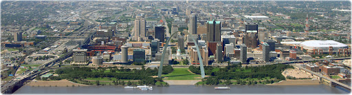

Welcome to the Great City of Saint Louis
St. Louis or Saint Louis is an independent city, located in the US state of Missouri, on the border with the state of Illinois. Located at the confluence of the Mississippi River and the Missouri River, it is one of the main cities in the American Midwest. According to the 2017 Economic Census, manufacturing in the St. Louis, MO-IL metro area conducted $53.3 billion in business, followed by the retail trade with $51.3 billion, the healthcare and social service industry with $22.5 billion, and professional, scientific, and technical services with $15.1 billion.

Before European settlement, the area was a regional center of Native American Mississippian culture. St. Louis was founded on February 14, 1764, by French fur traders Gilbert Antoine de St. Maxent,[10] Pierre Laclède and Auguste Chouteau, who named it for Louis IX of France. In 1764, following France's defeat in the Seven Years' War, the area was ceded to Spain. In 1800, it was retroceded to France, which sold it three years later to the United States as part of the Louisiana Purchase;[11] the city was then the point of embarkation for the Corps of Discovery on the Lewis and Clark Expedition. In the 19th century, St. Louis became a major port on the Mississippi River; from 1870 until the 1920 census, it was the fourth-largest city in the country. It separated from St. Louis County in 1877, becoming an independent city and limiting its own political boundaries. St. Louis had a brief run as a world-class city in the early 20th century.[12] In 1904, it hosted the Louisiana Purchase Exposition and the Summer Olympics.
. Louis grew slowly until the American Civil War, when industrialization and immigration sparked a boom. Mid-19th century immigrants included many Irish and Germans; later there were immigrants from southern and eastern Europe. In the early 20th century, African American and white migrants came from the South; the former as part of the Great Migration out of rural areas of the Deep South. Many came from Mississippi and Arkansas. After years of immigration, migration, and expansion, the city reached its peak population in 1950. That year, the Census Bureau reported St. Louis's population as 82% White and 17.9% African American.[47] After World War II, St. Louis began losing population to the suburbs, first because of increased demand for new housing, unhappiness with city services, ease of commuting by highways, and later, white flight.[48] St. Louis's population decline has resulted in a significant increase of abandoned residential housing units and vacant lots throughout the city proper; this blight has attracted much wildlife (such as deer and coyotes) to the many abandoned overgrown lots.
Events coming...
Comic Con XP
Next Weekend of City Hall
Second Classical Festival
St. Theater, 4th January
Geyser Song Day
February 29